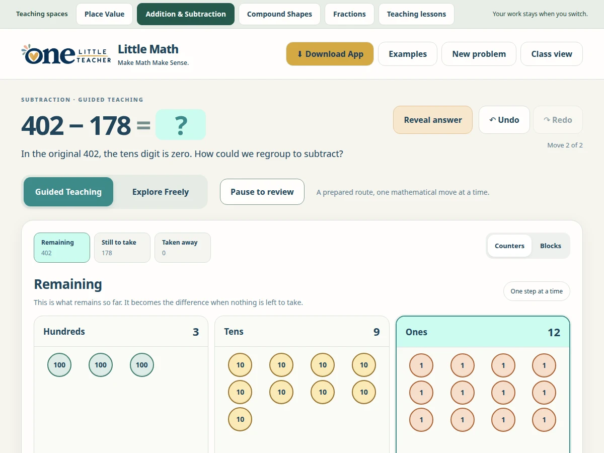

LITTLE SOLUTIONS
Little Math
Use visual teaching spaces for place value, addition and subtraction, compound shapes and fractions.
$4.99
Ways to use it
- Discuss regrouping alongside written calculations.
- Explore fraction models and the area of combined shapes.
How to use it
- Choose a teaching space.
- Build an example or choose a prepared problem.
- Explore the visual model together and reveal answers when ready.
Practical details
The addition and subtraction builder uses whole numbers from 0 to 9,999, nonnegative differences and sums no greater than 9,999.
Explore together
Choose the setup that fits your lesson or classroom routine.